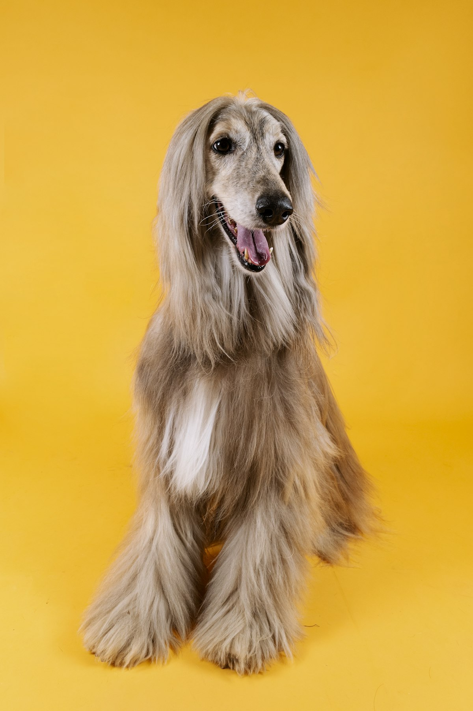
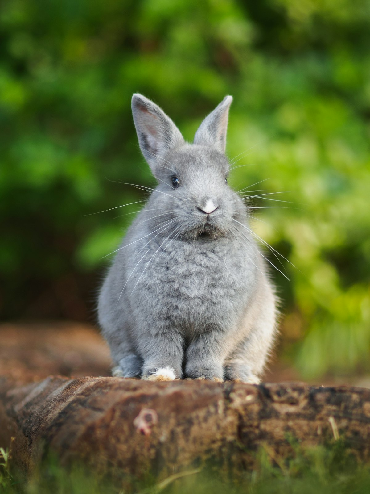
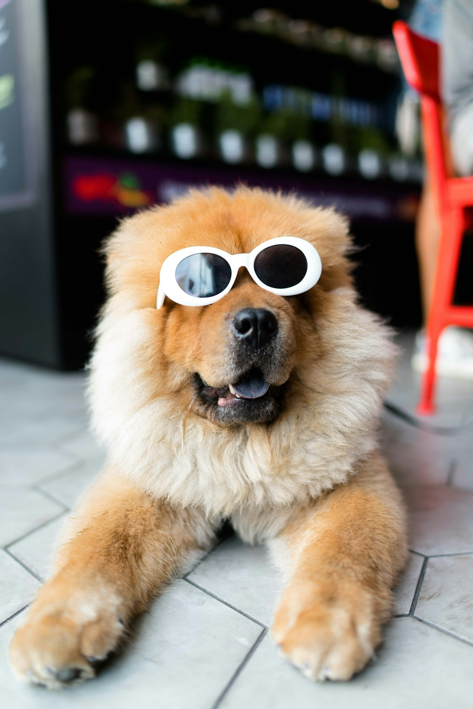

Un espacio acogedor para el cuidado de perros y gatos en Alfareros, Chimalhuacán. Abierto todos los días.
📞 Llamar 55 2231 7322💬 WhatsAppRevisión completa y diagnóstico.
Esquemas para cachorros, gatitos y adultos.
Agenda por teléfono o WhatsApp.
Baño y limpieza para tu mascota.
Análisis clínicos y estudios.
Baño y corte para perros y gatos.
En Villa Animal creamos un ambiente cálido para que tu mascota y tú se sientan seguros. Nuestros clientes destacan la atención amable y profesional, el servicio de baño y la facilidad para agendar cita.



★★★★★“Muy amables y profesionales, el lugar es acogedor y mi perrita salió tranquila.”
— Cliente
★★★★★“Me explicaron todo con paciencia y el precio fue justo. Recomendados.”
— Clienta
★★★★★“El baño quedó excelente y me dieron cita sin esperar mucho.”
— Cliente
Lunes a sábado de 11:00 a 18:00 y domingo de 11:00 a 16:00.
Sí, llámanos o escríbenos por WhatsApp y te apartamos un horario.
Sí, contamos con servicio de baño; pregunta por disponibilidad del día.
Claro, atendemos perros y gatos con el mismo cuidado y paciencia.
En Av. Agrarismo Mz 316 Lt 28, colonia Alfareros, Chimalhuacán.
📍 Av. Agrarismo Mz 316 Lt 28, Alfareros, 56363 Chimalhuacán, Méx.
📞 55 2231 7322
🕙 L-S 11:00–18:00 · D 11:00–16:00